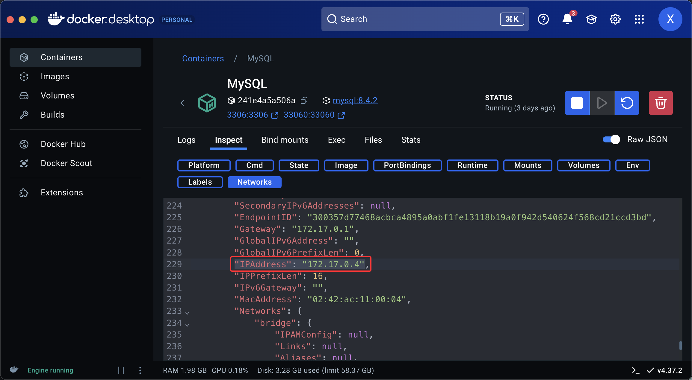
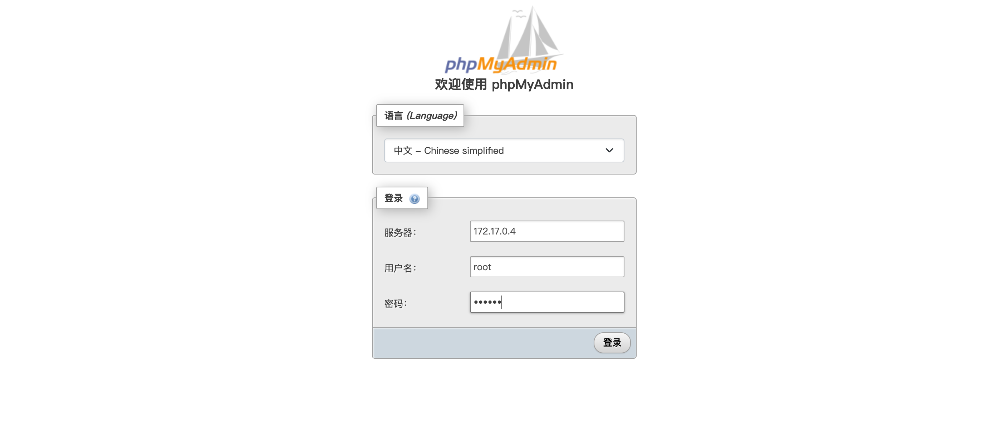
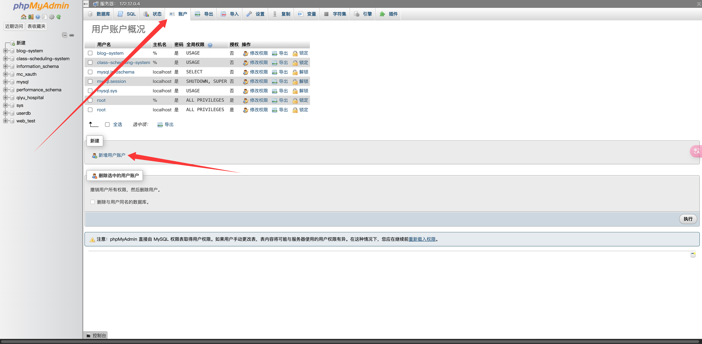
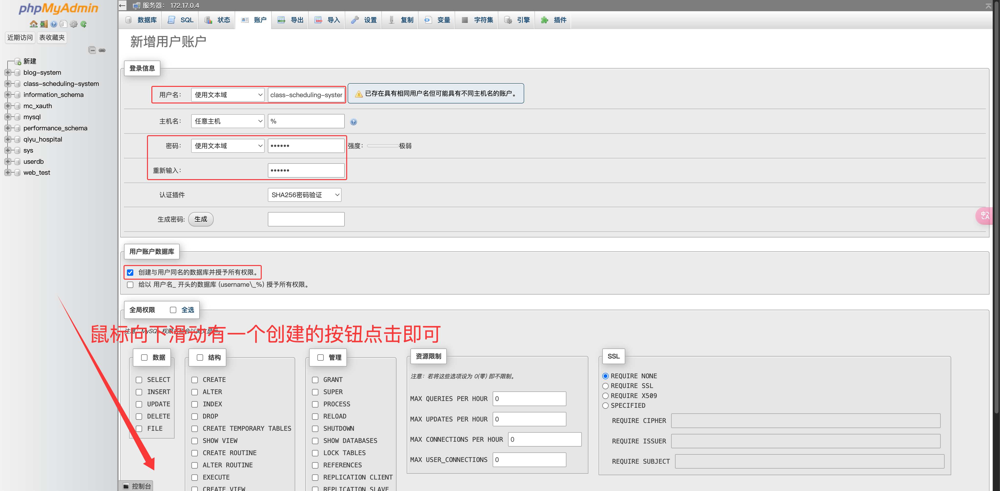
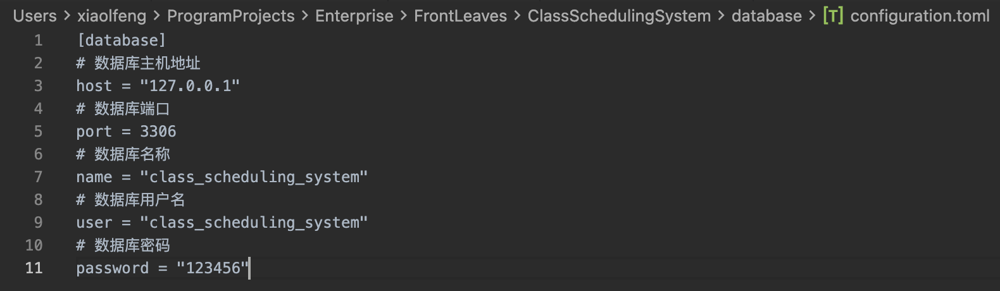

关系型数据库准备
说明：本文档主要指导 MySQL 数据库的安装与初始化配置，以确保环境满足系统运行需求。
数据库版本要求
- 支持版本：MySQL 8.0 及以上版本（不支持 MySQL 9.0 及其之后版本）。
- 推荐使用场景：开发与生产环境。
数据库安装
本文不详细描述 MySQL 数据库的安装过程，推荐使用 Docker 部署以简化配置。
使用 Docker 安装 MySQL
-
打开命令行终端，输入以下命令以拉取并启动 MySQL 容器：
docker run --name <ContainerName> -p 3306:3306 -e MYSQL_ROOT_PASSWORD=<YourPassword> -d mysql:8.4.3参数说明：
<ContainerName>：容器名称，自定义命名，例如MySQL_8。<YourPassword>：MySQLroot用户密码，自定义密码，例如123456。
-
验证容器是否成功运行：
docker ps若容器未正常启动，可通过以下命令检查错误日志：
docker logs <ContainerName>
数据库管理工具（可选项）「推荐」
为便于数据库管理，推荐使用 PHPMyAdmin 作为图形化管理工具。
使用 Docker 部署 PHPMyAdmin
-
在命令行输入以下命令以启动 PHPMyAdmin 容器：
docker run --name <ContainerName> -d -e PMA_ARBITRARY=1 -p <YourPort>:80 phpmyadmin参数说明：
<ContainerName>：容器名称，自定义命名，例如phpmyadmin。<YourPort>：映射到本地的端口，例如8080。
-
在浏览器中访问
http://localhost:<YourPort>，即可打开 PHPMyAdmin 管理页面。
数据库初始化
获取 MySQL 容器的 IP 地址
-
在 Docker Desktop 中选择已启动的 MySQL 容器，点击
Inspect，找到Network中的IPAddress。说明：
IPAddress是 MySQL 容器的内部网络地址，后续将用于连接数据库。
配置 PHPMyAdmin 登录
- 打开 PHPMyAdmin 页面，在 服务器 栏中输入 MySQL 容器的
IPAddress。 -
填写用户名和密码：
- 用户名：
root - 密码：您在 Docker 部署 MySQL 时设置的
<YourPassword>

- 用户名：
-
登录成功后，点击
账户菜单，选择新增用户账户以创建新用户。
-
配置用户信息：
- 用户名：自定义用户名，例如
class-scheduling-system。 - 密码：自定义密码，例如
123456。 - 勾选选项：创建与用户同名的数据库并授予所有权限。
完成配置后点击
执行按钮。
- 用户名：自定义用户名，例如
数据库 CLI 工具
下载 CLI 工具
- 下载地址：class-scheduling-system/table-install-cli
- 选择版本：根据操作系统和架构选择对应版本。
- Arm64 架构：下载 arm64 程序。
- X86_64 架构：下载 amd64 程序。
配置 CLI 工具
- 下载完成后，将程序文件放置到本地指定位置。
-
在终端中执行以下命令以生成默认配置文件：
./cli-<YourComputerSystem>-<Architecture>[.exe]参数说明：
<YourComputerSystem>：操作系统名称，例如：linux：表示 Linux 系统。windows：表示 Windows 系统。macos：表示 macOS 系统。
<Architecture>：系统架构，例如：arm64：适用于 ARM64 架构。amd64：适用于 X86_64 架构。
[.exe]：仅在 Windows 系统中使用，Linux 和 macOS 不需要。
-
打开生成的
configuration.toml配置文件，确认配置是否正确。注意：若操作步骤与上述示例一致，默认配置通常无需修改。

测试连接
-
在终端中执行以下命令测试数据库连接：
./cli-<YourComputerSystem>-<Architecture>[.exe] conn参数说明：
conn：CLI 提供的子命令，用于测试与数据库的连接是否成功。
-
如果返回
数据库连接成功，则表示配置无误。 - 如果返回错误信息，请根据提示进行排查。
注意事项
- 确保 MySQL 和 PHPMyAdmin 容器均正常运行。
- 不要使用过于简单的密码以保证数据安全。
- 使用 CLI 工具时，请保持工具版本与系统兼容。
结语
数据库安装与配置教程到此结束。如需初始化数据库全部内容，可使用 CLI 提供的一键初始化功能：
./cli-<YourComputerSystem>-<Architecture>[.exe] help
请根据需求查阅工具使用方法，完成后续配置与管理。